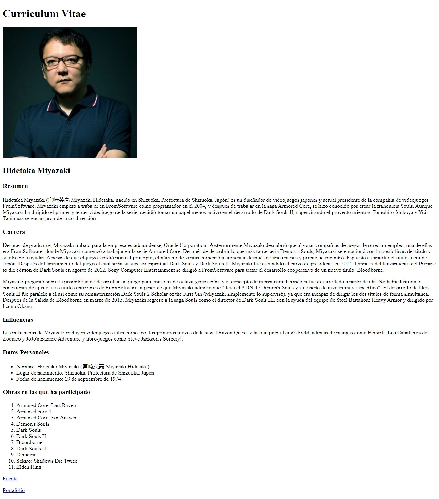
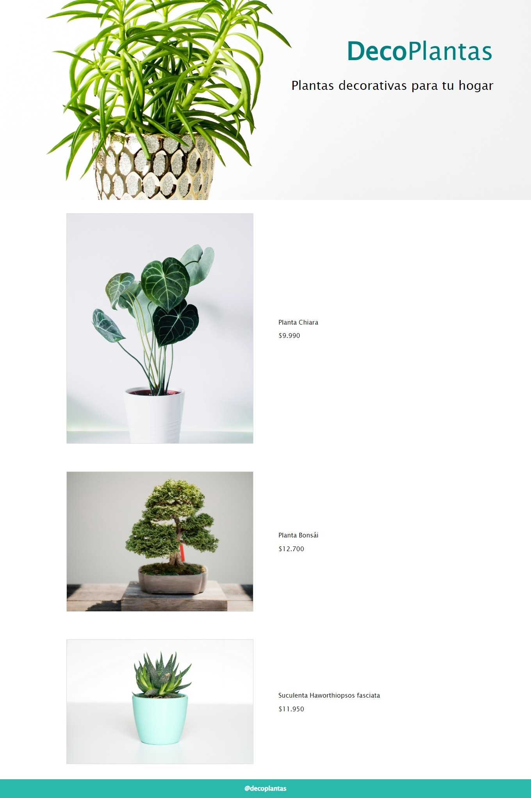
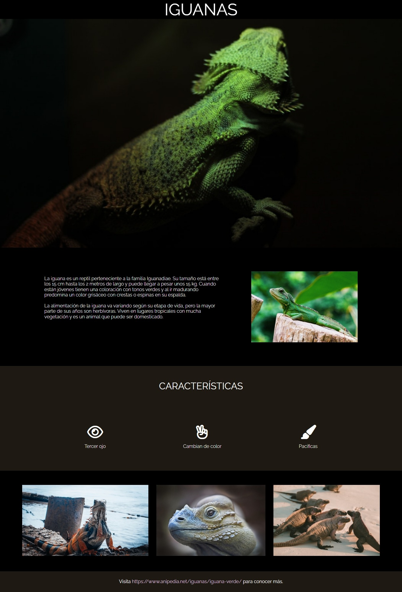
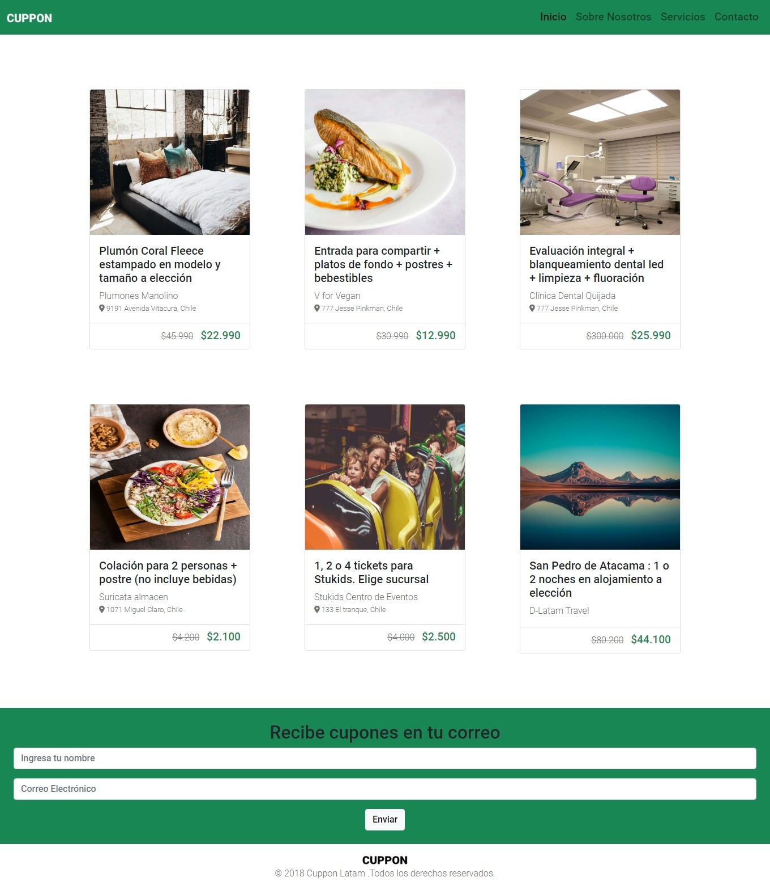
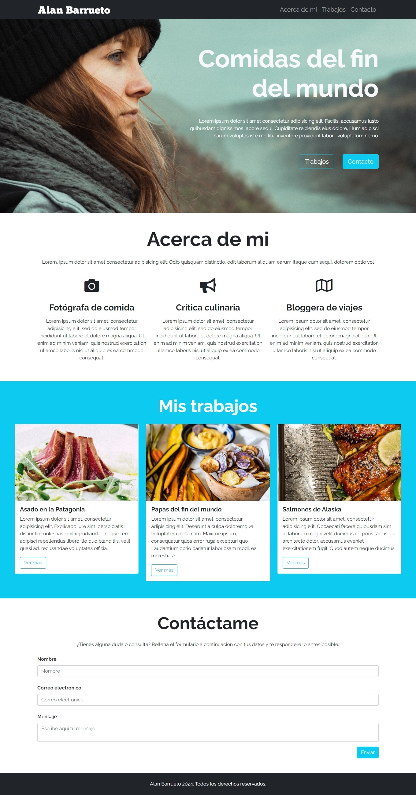

Información personal
Alan Barrueto, 25
Fono: +569 12345678
Correo: barruetoalan9@gmail.com
Dirección: Pudahuel, Santiago de Chile
Formación Académica
2013
- 2014
Primero y Segundo medio: Instituto Comercial Libertador Bernardo O'higgins.
2015 -
2016
Tercero y Cuarto medio : Instituto Comercial Eliodoro Dominguez Dominguez.
(Título
Técnico en contabilidad)
2018
Curso guardia de seguridad OS 10.
2019 (No
terminado)
Ingeniería en informática: Instituto Profesional Duoc UC.
Experiencia Laboral
(12 / 2016 - 02 / 2017)
Práctia de contabilidad en Banco Santander.
(11 / 2018)
Guardia de seguridad CRS Dr. Salvador Allende Gossens.
(04 / 2022 - 05 / 2022)
Operario de bodega.
(06 / 2022 - 12 / 2023)
Vendedor Tienda CAT mall Independencia.
Portafolio
Primer proyecto

Curriculum realizado como primer proyecto de aprendizaje de HTML sobre Hidetaka
Miyazaki.
HTML
Segundo proyecto

Prototipo de página web para venta de plantas creado con HTML y CSS.
HTML
CSS
Tercer proyecto

Front Page sobre iguanas y sus caracteristicas creado con HTML y CSS implementando flexbox.
HTML
CSS
Cuarto Proyecto

Página web de cupones diseñada con HTML, CSS y Bootstrap.
HTML
CSS
Bootstrap
Quinto proyecto

Página web clonada y modificada desde Github para entender su funcionamiento.
Github